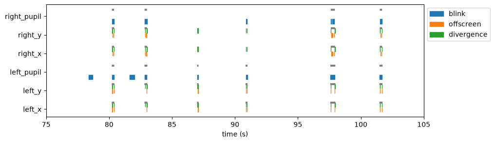
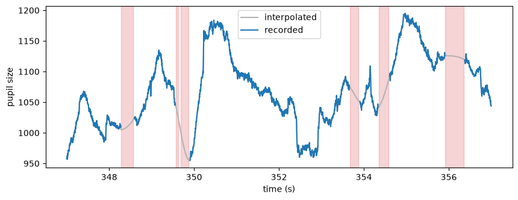
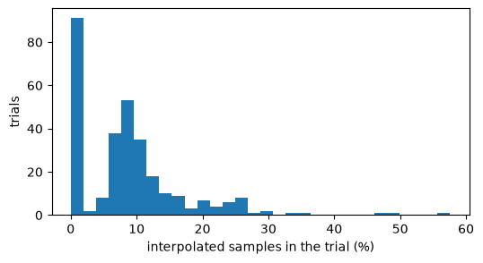

Missing data#
Pupil and gaze data have gaps and bad samples for many reasons: the eye tracker loses the pupil during a blink, the gaze leaves the screen, the two eyes point to different places, or a part of the recording is simply not part of the analysis. pypillometry keeps track of why a sample is bad, and a mask policy decides which samples the analyses leave out.
This tutorial goes through these steps with a real recording. The concepts are explained in the user guide (Missing data).
[1]:
import pypillometry as pp
from pypillometry import u
import numpy as np
import pandas as pd
import matplotlib.pyplot as plt
pp.logging_set_level("WARNING")
We use the example dataset rlmw_002: a 20-minute recording of both eyes (pupil and gaze, 500 Hz) from a reinforcement-learning task. It is downloaded from OSF on first use (see Example datasets).
[2]:
d = pp.get_example_data("rlmw_002", cache_dir="example_data")
d
[2]:
EyeData — rlmw_002
Signal overview
![left_pupil sparkline]()
![left_x sparkline]()
![left_y sparkline]()
![right_pupil sparkline]()
![right_x sparkline]()
![right_y sparkline]()
Data glimpse
EyeDataDict(vars=6,n=597301,shape=(597301,)): left_x (float64): 655.6, 655.7, 655.0, 654.5, 655.0... left_y (float64): 599.9, 598.9, 597.6, 597.8, 597.8... left_pupil (float64): 1121.0, 1122.0, 1124.0, 1126.0, 1126.0... right_x (float64): 773.1, 773.8, 774.8, 776.3, 776.7... right_y (float64): 594.2, 593.9, 596.5, 597.4, 597.3... right_pupil (float64): 949.0, 951.0, 956.0, 959.0, 960.0...
Recent history
- reset_time()
Missing samples in the raw data#
Samples that the eye tracker did not record are NaN (Eyelink codes them as 0; they are converted to NaN when the data are read). NaN is the only kind of missing data that is stored in the values themselves. d.mask(eye, variable) returns True for each unusable sample:
[3]:
for key in d.data:
print(f"{key:12s} {np.isnan(d.data[key]).mean():6.2%} NaN, "
f"{d.mask(key).mean():6.2%} masked")
left_x 3.13% NaN, 3.13% masked
left_y 3.13% NaN, 3.13% masked
left_pupil 3.13% NaN, 3.13% masked
right_x 2.07% NaN, 2.07% masked
right_y 2.07% NaN, 2.07% masked
right_pupil 2.07% NaN, 2.07% masked
Marking bad samples: mask layers#
The detection methods do not change the values. They mark the samples they find in a mask layer of the channels they check:
d.pupil.blinks_detect()sets the"blink"layer of the pupil;d.gaze.mask_offscreen()sets the"offscreen"layer of x and y (it needs the screen size, which is stored with this dataset);d.gaze.mask_divergences()sets the"divergence"layer of x and y of both eyes.
[4]:
d.pupil.blinks_detect()
d.gaze.mask_offscreen()
d.gaze.mask_divergences()
d.data.layer_names
[4]:
['blink', 'offscreen', 'divergence']
To see what is masked where, we write a small helper that shows, for each channel, the percentage of samples that are NaN, the percentage in each layer, and the percentage that is masked under the "default" and the "strict" policy (explained below). A sample can be in several layers at once (a blink is usually also NaN), so the columns do not add up.
[5]:
def layer_table(d):
rows = {}
for key in d.data:
row = {"NaN": np.isnan(d.data[key]).mean()}
for name in d.data.layer_names:
if name == "excluded": # one layer for the whole recording
row[name] = d.data.get_rec_layer(name).mean()
else:
row[name] = d.data.get_layer(key, name).mean()
row["masked (default)"] = d.mask(key).mean()
row["masked (strict)"] = d.mask(key, policy="strict").mean()
rows[key] = row
return (100 * pd.DataFrame(rows).T).round(2)
layer_table(d)
[5]:
| NaN | blink | offscreen | divergence | masked (default) | masked (strict) | |
|---|---|---|---|---|---|---|
| left_x | 3.13 | 0.00 | 0.97 | 0.97 | 4.86 | 4.86 |
| left_y | 3.13 | 0.00 | 0.97 | 0.97 | 4.86 | 4.86 |
| left_pupil | 3.13 | 5.84 | 0.00 | 0.00 | 5.84 | 5.84 |
| right_x | 2.07 | 0.00 | 1.04 | 0.97 | 4.06 | 4.06 |
| right_y | 2.07 | 0.00 | 1.04 | 0.97 | 4.06 | 4.06 |
| right_pupil | 2.07 | 4.08 | 0.00 | 0.00 | 4.09 | 4.09 |
Each layer belongs to the channels it was detected on: blinks are on the pupil only, off-screen samples and divergences on x and y only. The gaze channels are still masked during blinks, because the eye tracker records no gaze then (NaN).
The layers can be read back as Intervals (in ms), one per channel:
[6]:
blinks = d.get_blinks()
blinks["left_pupil"]
[6]:
Intervals 'left_pupil_blinks' | 321 intervals (total duration: 69762.00 ms), 217.33 ms +/- 136.83 ms, [22.00 ms, 984.00 ms]
[7]:
d.get_layer_intervals("offscreen", variables="x")
[7]:
{'left_x': Intervals 'left_x_offscreen' | 383 intervals (total duration: 11582.00 ms), 30.24 ms +/- 79.67 ms, [2.00 ms, 544.00 ms],
'right_x': Intervals 'right_x_offscreen' | 405 intervals (total duration: 12448.00 ms), 30.74 ms +/- 77.91 ms, [2.00 ms, 542.00 ms]}
With these, we can draw where each layer is set in each channel, here for 30 seconds of the recording (the grey bars are NaN samples). d.plot.plot_masked() gives a similar overview of the masked stretches for the whole recording.
[8]:
def plot_layers(d, start, end, layers=("blink", "offscreen", "divergence")):
fig, ax = plt.subplots(figsize=(10, 3))
keys = list(d.data)
sel = (d.tx >= start) & (d.tx < end)
for row, key in enumerate(keys):
for col, name in enumerate(layers):
runs = d.get_layer_intervals(name, units="sec")[key]
ax.broken_barh([(on, off - on) for on, off in runs if off > start / 1000 and on < end / 1000],
(row - 0.4 + 0.25 * col, 0.25), color=f"C{col}",
label=name if row == 0 else None)
nan = np.isnan(d.data[key][sel])
ax.scatter(d.tx[sel][nan] / 1000, np.full(nan.sum(), row + 0.35), marker="|", color="0.5", s=10)
ax.set_yticks(range(len(keys)), keys)
ax.set_xlim(start / 1000, end / 1000)
ax.set_xlabel("time (s)")
ax.legend(loc="upper left", bbox_to_anchor=(1, 1))
plot_layers(d, 75_000, 105_000)

Most blinks are NaN in all channels, and the gaze around them is often off the screen or divergent as the eyelid closes. Some blinks (here at 78.5 s and 82 s in the left eye) were found from the velocity of the pupil size although no sample is missing: the layer records the detection, not only the gaps.
Re-running a detector replaces its layer#
Each detector only writes its own layer and replaces it when it runs again. Trying other parameters therefore never adds up masks from earlier runs, and clear_layer() undoes a detection:
[9]:
def nblinks(d):
return {ch: stats["n"] for ch, stats in d.blink_stats().items()}
n_default = nblinks(d)
d.pupil.blinks_detect(vel_onset=-20, vel_offset=20) # less sensitive
n_other = nblinks(d)
d.pupil.blinks_detect() # back to the defaults
print(n_default, n_other, nblinks(d), sep="\n")
{'left_pupil': 321, 'right_pupil': 307}
{'left_pupil': 253, 'right_pupil': 231}
{'left_pupil': 321, 'right_pupil': 307}
[10]:
d2 = d.clear_layer("divergence", inplace=False)
d2.data.get_layer("left_x", "divergence").sum()
[10]:
np.int64(0)
Excluded periods#
Some parts of a recording are not part of the analysis, e.g. the time before the task starts or breaks. They are not missing data: blink detection and the quality report ignore them instead of counting them as gaps. exclude_intervals() and keep_intervals() store them in the recording-wide "excluded" layer, which masks all channels, including channels added later. Here we keep the time from 1 s before the first event to 3 s after the last one:
[11]:
first, last = d.events.onsets[0], d.events.onsets[-1]
d.keep_intervals([(first - 1000, last + 3000)])
d.get_excluded("sec")
[11]:
Intervals 'excluded' | 1 intervals (total duration: 4.18 sec), 4.18 sec +/- 0.00 sec, [4.18 sec, 4.18 sec]
[12]:
layer_table(d)
[12]:
| NaN | blink | offscreen | divergence | excluded | masked (default) | masked (strict) | |
|---|---|---|---|---|---|---|---|
| left_x | 3.13 | 0.00 | 0.97 | 0.97 | 0.35 | 5.13 | 5.13 |
| left_y | 3.13 | 0.00 | 0.97 | 0.97 | 0.35 | 5.13 | 5.13 |
| left_pupil | 3.13 | 5.84 | 0.00 | 0.00 | 0.35 | 6.19 | 6.19 |
| right_x | 2.07 | 0.00 | 1.04 | 0.97 | 0.35 | 4.33 | 4.33 |
| right_y | 2.07 | 0.00 | 1.04 | 0.97 | 0.35 | 4.33 | 4.33 |
| right_pupil | 2.07 | 4.08 | 0.00 | 0.00 | 0.35 | 4.44 | 4.44 |
Mask policies#
A mask policy decides which layers make a sample unusable. All analysis and processing methods take a policy= argument; there are three predefined policies:
policy |
masked samples |
|---|---|
|
NaN, blinks, off-screen, divergences, user masks, excluded periods; interpolated samples are used |
|
the same, and interpolated samples |
|
nothing, not even NaN |
d.mask() gives the mask, d.values() the values with NaN where the mask is set, and d["left_pupil"] a numpy masked array under the default policy:
[13]:
for policy in ["default", "strict", "raw"]:
print(f"{policy:8s} {d.mask('left_pupil', policy=policy).mean():6.2%} masked")
default 6.19% masked
strict 6.19% masked
raw 0.00% masked
[14]:
x = d["left_pupil"]
type(x).__name__, x.mask.mean().round(4)
[14]:
('MaskedArray', np.float64(0.0619))
A policy can also be a list of layers (NaN is always included), e.g. to look only at the blinks:
[15]:
d.mask("left_pupil", policy=["blink"]).mean()
[15]:
np.float64(0.0584495924165538)
Interpolating blinks#
d.pupil.blinks_interpolate() replaces the pupil size during the blinks by a smooth curve. The interpolated samples get the "interpolated" layer; the "blink" layer stays, so it is always known which samples were reconstructed. Under the default policy, the interpolated samples are used, under the strict policy they are not:
[16]:
d.pupil.blinks_interpolate()
layer_table(d)
[16]:
| NaN | blink | offscreen | divergence | excluded | interpolated | masked (default) | masked (strict) | |
|---|---|---|---|---|---|---|---|---|
| left_x | 3.13 | 0.00 | 0.97 | 0.97 | 0.35 | 0.00 | 5.13 | 5.13 |
| left_y | 3.13 | 0.00 | 0.97 | 0.97 | 0.35 | 0.00 | 5.13 | 5.13 |
| left_pupil | 0.00 | 5.84 | 0.00 | 0.00 | 0.35 | 7.49 | 0.35 | 7.84 |
| right_x | 2.07 | 0.00 | 1.04 | 0.97 | 0.35 | 0.00 | 4.33 | 4.33 |
| right_y | 2.07 | 0.00 | 1.04 | 0.97 | 0.35 | 0.00 | 4.33 | 4.33 |
| right_pupil | 0.00 | 4.08 | 0.00 | 0.00 | 0.35 | 5.66 | 0.35 | 6.01 |
After interpolation, no pupil sample is NaN any more, and the pupil is only masked in the excluded periods (default policy). The strict policy still masks the interpolated samples. Note that the interpolated stretches are a bit longer than the blinks: the method extends each blink by a margin, because the samples next to a blink are distorted as well.
[17]:
fig, ax = plt.subplots(figsize=(10, 3.5))
sel = (d.tx > 347_000) & (d.tx < 357_000)
t = d.tx[sel] / 1000
ax.plot(t, d.get_values("left_pupil", policy="raw")[sel], color="0.7", label="interpolated")
ax.plot(t, d.get_values("left_pupil", policy="strict")[sel], color="C0", label="recorded")
for on, off in d.get_blinks(eyes="left", variables="pupil", units="sec")["left_pupil"]:
if t[0] < on < t[-1]:
ax.axvspan(on, off, color="C3", alpha=0.2)
ax.set_xlabel("time (s)"); ax.set_ylabel("pupil size"); ax.legend();

The red stretches are the detected blinks, the grey line the values that the default policy uses there.
Pupil samples during off-screen gaze#
The off-screen and divergence layers mask only the gaze channels. Whether the pupil size is still valid when the gaze is off the screen depends on the setup; to mask the pupil there as well, copy the off-screen periods to the pupil with mask_intervals(). They go into the pupil’s "user" layer:
[18]:
d3 = d.copy()
off = d3.get_layer_intervals("offscreen", variables="x")
d3.mask_intervals({"left_pupil": off["left_x"], "right_pupil": off["right_x"]})
layer_table(d3).loc[["left_pupil", "right_pupil"]]
[18]:
| NaN | blink | offscreen | divergence | excluded | interpolated | user | masked (default) | masked (strict) | |
|---|---|---|---|---|---|---|---|---|---|
| left_pupil | 0.0 | 5.84 | 0.0 | 0.0 | 0.35 | 7.49 | 0.97 | 1.04 | 8.53 |
| right_pupil | 0.0 | 4.08 | 0.0 | 0.0 | 0.35 | 5.66 | 1.04 | 1.04 | 6.70 |
The pupil is now in the "user" layer for about 1% of the samples, but the default policy masks fewer of them. The reason: under the default policy, an interpolated sample is always usable, whatever other layer of the channel is set and in whichever order the layers were set (only excluded periods mask it). Off-screen periods that fall into an interpolated blink therefore stay usable:
[19]:
user = d3.data.get_layer("left_pupil", "user")
interp = d3.data.get_layer("left_pupil", "interpolated")
print(f"user layer: {user.mean():.2%}, of that interpolated: {(user & interp).mean():.2%}")
user layer: 0.97%, of that interpolated: 0.28%
To leave these samples out as well, use the strict policy (which leaves out all interpolated samples), or a policy that lists the layers to mask without the exception for interpolated samples, e.g. policy=["user", "excluded"].
Filtering#
The filters read the usable samples only. Unusable samples are bridged linearly for the filter and keep their values, so neither blinks nor excluded periods leak into their neighbours:
[20]:
before = d.data["left_pupil"].copy()
d.pupil.lowpass_filter(cutoff=4)
masked = d.mask("left_pupil")
print("masked samples unchanged:", np.array_equal(before[masked], d.data["left_pupil"][masked]))
print("usable samples filtered: ", not np.allclose(before[~masked], d.data["left_pupil"][~masked]))
masked samples unchanged: True
usable samples filtered: True
Event-related analyses#
Segments around events (get_segments()) and statistics per event (stat_per_event()) use the policy as well. With the default policy, the interpolated samples are part of each trial; with the strict policy, they are masked. This lets us find the trials that consist mostly of reconstructed data:
[21]:
stim = d.get_epochs("S_", window=(-500, 2500) * u.ms)
seg = d.get_segments(stim, "left_pupil")
seg_strict = d.get_segments(stim, "left_pupil", policy="strict")
seg
[21]:
SegmentedEyeData — S_
Channels (mean over segments; red line = event onset)
![left_pupil (0.0% missing) sparkline]()
Epochs
Epochs 'S_' | 300 epochs, window (-500, 2500) ms
[22]:
recon = np.ma.getmaskarray(seg_strict["left_pupil"]).mean(axis=0) # one value per trial
fig, ax = plt.subplots(figsize=(6, 3))
ax.hist(100 * recon, bins=30)
ax.set_xlabel("interpolated samples in the trial (%)"); ax.set_ylabel("trials");

Epochs.keep() selects the trials to keep, e.g. those with less than 25% interpolated samples:
[23]:
good = stim.keep(recon < 0.25)
print(len(stim), "trials,", len(good), "with less than 25% interpolated samples")
300 trials, 284 with less than 25% interpolated samples
[24]:
mean_default = d.stat_per_event(stim, variables="pupil")["left_pupil"]
mean_strict = d.stat_per_event(stim, variables="pupil", policy="strict")["left_pupil"]
diff = np.abs(np.asarray(mean_default) - np.asarray(mean_strict))
print(f"largest difference in a trial mean: {np.nanmax(diff):.1f} "
f"(median {np.nanmedian(diff):.2f})")
largest difference in a trial mean: 48.1 (median 3.13)
Downsampling#
downsample() averages the usable samples in each new sampling interval. The layers are carried over: a new sample is in a layer if the layer covers more than half of its interval. The proportion of samples in each layer therefore stays about the same:
[25]:
dd = d.downsample(50, inplace=False)
pd.DataFrame({"500 Hz": layer_table(d).loc["left_pupil"],
"50 Hz": layer_table(dd).loc["left_pupil"]})
[25]:
| 500 Hz | 50 Hz | |
|---|---|---|
| NaN | 0.00 | 0.00 |
| blink | 5.84 | 5.78 |
| offscreen | 0.00 | 0.00 |
| divergence | 0.00 | 0.00 |
| excluded | 0.35 | 0.35 |
| interpolated | 7.49 | 7.45 |
| masked (default) | 0.35 | 0.35 |
| masked (strict) | 7.84 | 7.80 |
Combining the eyes#
d.pupil.merge_eyes() computes mean_pupil from the usable samples of both eyes, recorded samples first: where one eye was interpolated and the other one recorded, the recorded value is used (after the offset correction). The merged channel gets the layers that the eyes used for a sample have in common: it is "interpolated" only where both eyes were interpolated, and it is masked where neither eye is usable:
[26]:
dm = d.pupil.merge_eyes(inplace=False)
layer_table(dm).loc[["left_pupil", "right_pupil", "mean_pupil"]]
[26]:
| NaN | blink | offscreen | divergence | excluded | interpolated | masked (default) | masked (strict) | |
|---|---|---|---|---|---|---|---|---|
| left_pupil | 0.0 | 5.84 | 0.0 | 0.0 | 0.35 | 7.49 | 0.35 | 7.84 |
| right_pupil | 0.0 | 4.08 | 0.0 | 0.0 | 0.35 | 5.66 | 0.35 | 6.01 |
| mean_pupil | 0.0 | 3.33 | 0.0 | 0.0 | 0.35 | 4.84 | 0.35 | 5.19 |
Because mean_pupil keeps the "interpolated" layer where both eyes were interpolated, the strict policy leaves these samples out in the following steps (column “masked (strict)”). Merging with policy="strict" gives the same channel here:
[27]:
dm = d.pupil.merge_eyes(policy="strict", inplace=False)
layer_table(dm).loc[["mean_pupil"]]
[27]:
| NaN | blink | offscreen | divergence | excluded | interpolated | masked (default) | masked (strict) | |
|---|---|---|---|---|---|---|---|---|
| mean_pupil | 0.0 | 3.33 | 0.0 | 0.0 | 0.35 | 4.84 | 0.35 | 5.19 |
Missing data in the quality report#
The quality report counts missing data in the values (NaN) and reports the mask layers in its “Artifacts” section; excluded periods are left out of all measures. Interpolation fills the NaN samples, so after preprocessing the pupil shows no missing data any more. Run the report on the raw data to judge the recording, and after preprocessing to see what was masked and interpolated:
[28]:
raw = pp.get_example_data("rlmw_002", cache_dir="example_data")
raw.keep_intervals([(first - 1000, last + 3000)])
keys = ["pupil.left.missing_pct", "pupil.left.dropout_rate", "gaze.left.missing_pct",
"artifacts.left.pupil_masked_pct", "artifacts.left.gaze_masked_pct"]
pd.DataFrame({"raw": pd.Series(raw.quality_report().to_dict(flat=True)).reindex(keys),
"preprocessed": pd.Series(d.quality_report().to_dict(flat=True)).reindex(keys)})
[28]:
| raw | preprocessed | |
|---|---|---|
| pupil.left.missing_pct | 3.138882 | 0.0 |
| pupil.left.dropout_rate | 15.423076 | 0.0 |
| gaze.left.missing_pct | 3.138882 | 3.138882 |
| artifacts.left.pupil_masked_pct | NaN | 0.0 |
| artifacts.left.gaze_masked_pct | NaN | 4.795098 |
[29]:
d.quality_report()
[29]:
Quality report — rlmw_002 (EyeData)
good| duration | 19.9 min |
| included | 19.8 min |
| sampling rate | 500 Hz |
| samples | 597301 |
| events | 1320 |
| time gaps | 0 |
| left | right | |
|---|---|---|
| missing data | 0.0% good | 0.0% good |
| dropouts | 0 /min good | 0 /min good |
| longest dropout | 0 s good | 0 s good |
| noise | 0.027% good | 0.032% good |
| noise (SD) | 0.283 | 0.286 |
| jumps | 0 /min good | 0 /min good |
| left | right | |
|---|---|---|
| missing data | 3.1% good | 2.1% good |
| off-screen | 1.0% good | 1.1% good |
| precision | 0.0185 deg good | 0.0186 deg good |
| left/right | |
|---|---|
| pupil correlation | 0.943 good |
| gaze disparity | 0.418 deg good |
| left | right | |
|---|---|---|
| number | 321 | 307 |
| blink rate | 16.2 /min good | 15.5 /min good |
| mean duration | 217 ms | 159 ms |
| time in blinks | 5.9% good | 4.1% good |
| long (>500 ms) | 14 | 10 |
| left | right | |
|---|---|---|
| pupil masked | 0.0% good | 0.0% good |
| interpolated | 7.5% good | 5.7% good |
| gaze masked | 4.8% good | 4.0% good |
| masked off-screen | 0.97% | 1.0% |
| masked divergence | 0.89% | 0.89% |
| other artifacts | 0.0% | 0.0% |
Thresholds
| pupil.missing_pct | good <= 10, ok <= 20, poor <= 40, else bad |
| pupil.dropout_rate | good <= 30, ok <= 60, poor <= 150, else bad |
| pupil.longest_dropout | good <= 2, ok <= 5, poor <= 30, else bad |
| pupil.noise | good <= 0.5, ok <= 1, poor <= 2, else bad |
| pupil.jump_rate | good <= 1, ok <= 10, poor <= 100, else bad |
| gaze.missing_pct | good <= 10, ok <= 20, poor <= 40, else bad |
| gaze.dropout_rate | good <= 30, ok <= 60, poor <= 150, else bad |
| gaze.longest_dropout | good <= 2, ok <= 5, poor <= 30, else bad |
| gaze.offscreen_pct | good <= 5, ok <= 15, poor <= 30, else bad |
| gaze.precision_deg | good <= 0.05, ok <= 0.1, poor <= 0.2, else bad |
| binocular.pupil_correlation | good >= 0.9, ok >= 0.8, poor >= 0.6, else bad |
| binocular.gaze_disparity_deg | good <= 1, ok <= 2, poor <= 3, else bad |
| blinks.rate | good <= 20, ok <= 35, poor <= 70, else bad |
| blinks.time_pct | good <= 10, ok <= 20, poor <= 35, else bad |
| artifacts.pupil_masked_pct | good <= 10, ok <= 20, poor <= 35, else bad |
| artifacts.gaze_masked_pct | good <= 10, ok <= 20, poor <= 35, else bad |
| artifacts.interpolated_pct | good <= 10, ok <= 20, poor <= 30, else bad |
| calibration.mean_error | good <= 0.5, ok <= 1, poor <= 1.5, else bad |
| calibration.max_error | good <= 1, ok <= 1.5, poor <= 2, else bad |
Saving#
The layers are saved with the object (write_file(), write_file()), so a saved dataset keeps the information on why each sample was masked:
[30]:
import tempfile, os
fname = os.path.join(tempfile.mkdtemp(), "rlmw_002.pypil")
d.write_file(fname)
d_loaded = pp.EyeData.from_file(fname)
d_loaded.data.layer_names, np.array_equal(d_loaded.mask("left_pupil", policy="strict"),
d.mask("left_pupil", policy="strict"))
[30]:
(['blink', 'offscreen', 'divergence', 'excluded', 'interpolated'], True)
Summary#
Samples the eye tracker did not record are NaN in the values. All other reasons are mask layers, which record why a sample is bad. Each detector writes its own layer on the channels it checks and replaces it when it runs again.
Excluded periods are one layer for the whole recording; they mask every channel but are not counted as missing data.
The mask policy (
"default","strict","raw", or a list of layers) decides which samples the analyses use. By default, interpolated samples are used, even where another layer is set.To mask the pupil where the gaze is bad, copy the gaze layers with
mask_intervals().merge_eyes()prefers recorded samples and keeps the layers the eyes have in common, sopolicy="strict"still leaves out samples that were interpolated in both eyes.